This tour was booked through Veena World. We left Pune around 8 am. We traveled in an MSRTC bus and reached Mankhurd around 12 pm. From there, we took an auto and reached T1 Terminal around 1 pm.
The GP 1451 Akasa flight to Lucknow was on time and departed at 14:45 hrs. Travelling time to Lucknow is 2 hours. After reaching Lucknow International Airport, we proceeded to Ambedkar Park.
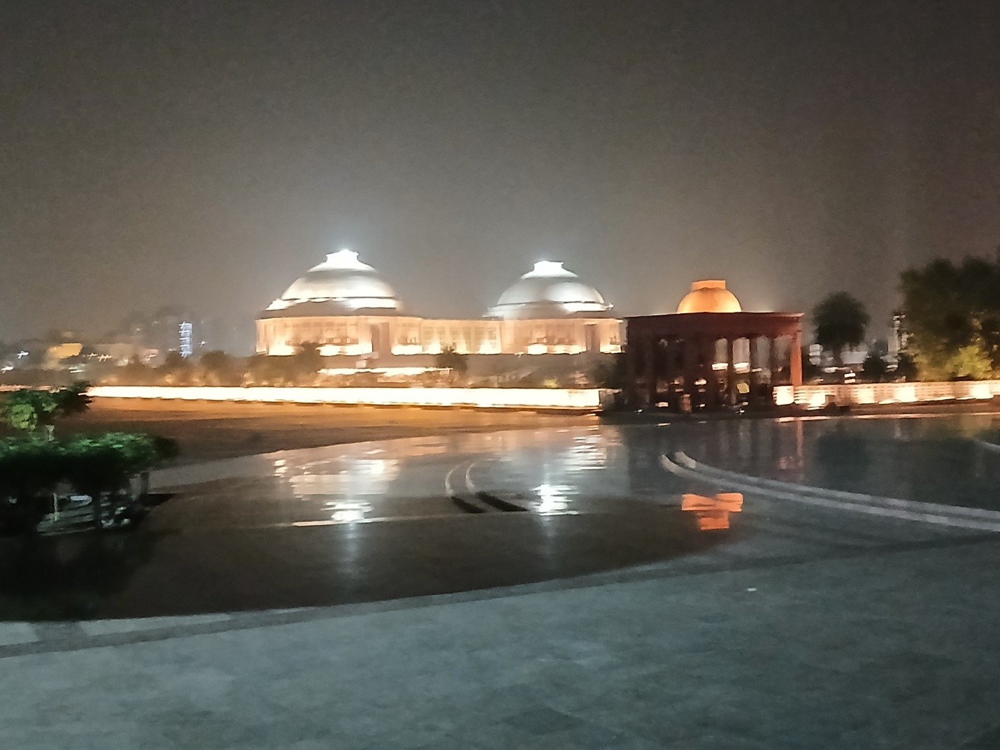
This huge park was developed by the earlier Chief Minister of UP, Mrs. Mayawati. Inside this park, a statue of Ambedkar, similar to the Abraham Lincoln statue in Washington, is erected.Sixty-two elephant statues are inside the park. Also, many Ashoka pillars are there. On the top of the pillars, lions are replaced with elephants, as the elephant is her party's symbol. Then we checked in at a hotel and had our dinner. Dinner was good.
In the morning, we took breakfast in the hotel (puri subji, idli chutney, and coffee) and left the hotel with our baggage. First, we visited the British Residency.
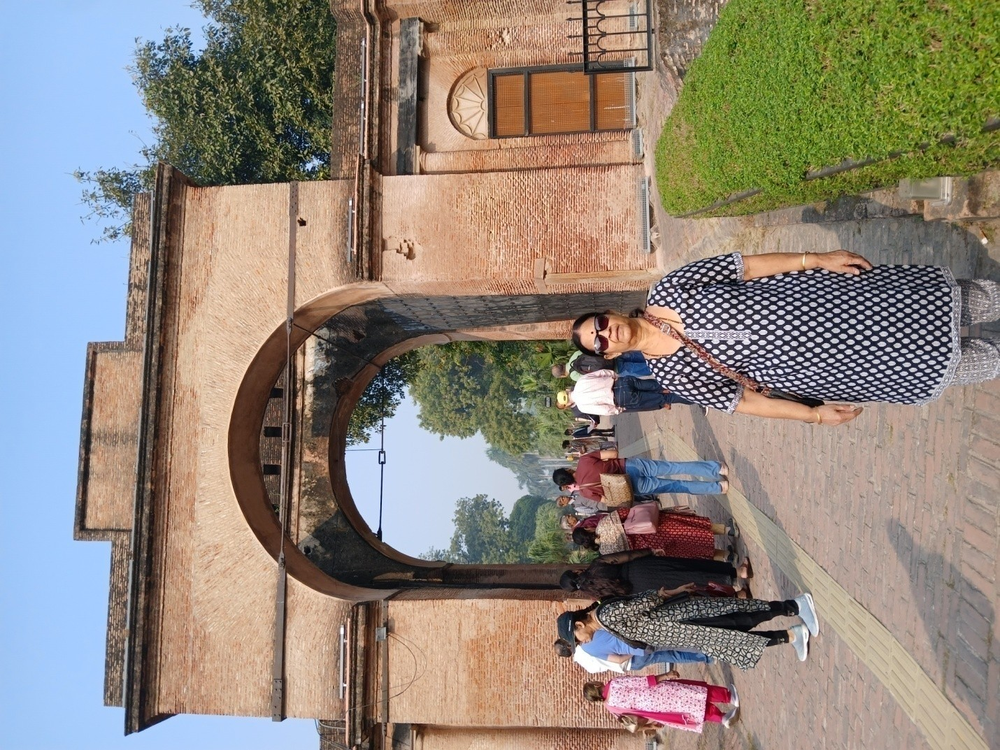
During the British regime, Lucknow was an important place for them. They created their mansion there. Still, the ruins of the British Residency are exhibited here. The ruins reflect how lavishly they lived here. Also, an exhibition is maintained on these premises.Then we went to Bada Imambara and Bhool Bhulaiya.
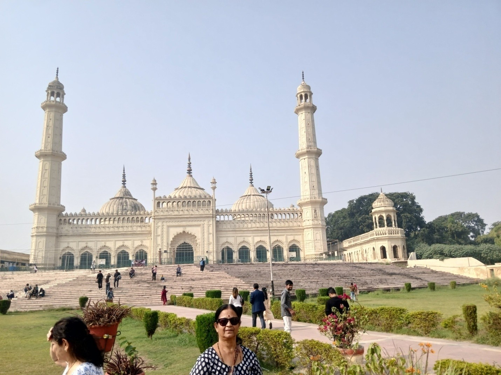
Before the British rule, this place was ruled by Nawabs. Lucknow was called the Land of Nawabs. Hence, in this city, many Mughal palaces and worshipping places are there. Still, those monuments are maintained.Chota Imambara was also constructed during their rule. Now also it is well maintained. Then we saw the Clock Tower. This one is the tallest clock tower in India. This was constructed by the British during their rule. The clock in the tower is German-made. Still, it is working. Then we saw Rumi Darwaza.
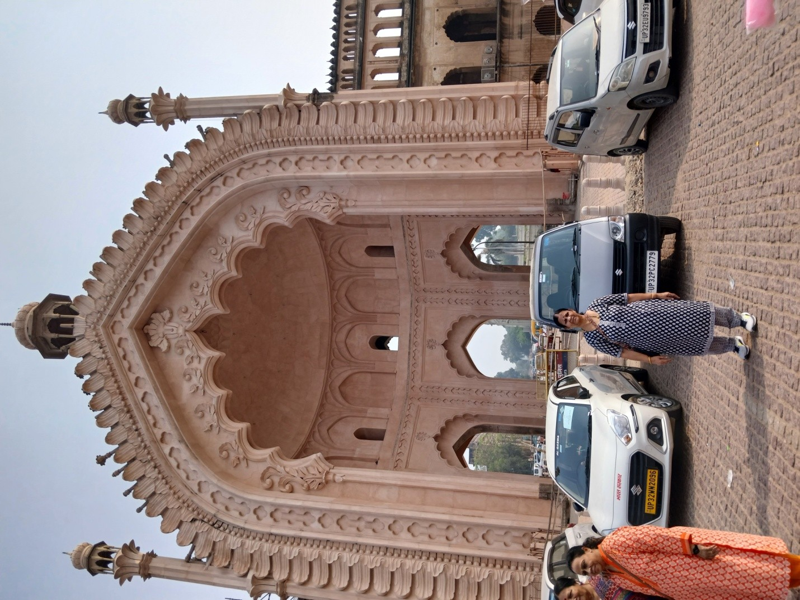
This Mughal monument is famous for its beautiful architecture.Then we stopped at a shop to purchase Chikankari dress materials, which are famous in Lucknow. The specialty of this variety is that lots of embroidery work is done manually over the cloth. As we understand it, plain cloths are delivered to the houses of poor people, they do the handwork, and they are paid. Lots of tourists buy these cloths here, and this provides good employment to poor ladies (work from home).
Lucknow is a clean city, and another specialty is that Atal Bihari Vajpayee lived in this city. Then we had our lunch. After lunch, we proceeded to Ayodhya, about 250 km from Lucknow. It is about 4 hours travel by road.
Our accommodation was arranged in a hotel called Ira. They welcomed us with a saffron shawl embedded with the picture of the Ram deity. Dinner was delicious, and no non-vegetarian food was seen on the buffet table. One person told me that no hotel in Ayodhya serves non-vegetarian food.
After breakfast, we left the hotel by bus. Buses are not allowed close to Ram Janmabhoomi Mandir. About 3 km ahead of the temple, buses are stopped. From that point, we took an electric auto-rickshaw. We were first dropped at Karyashala.
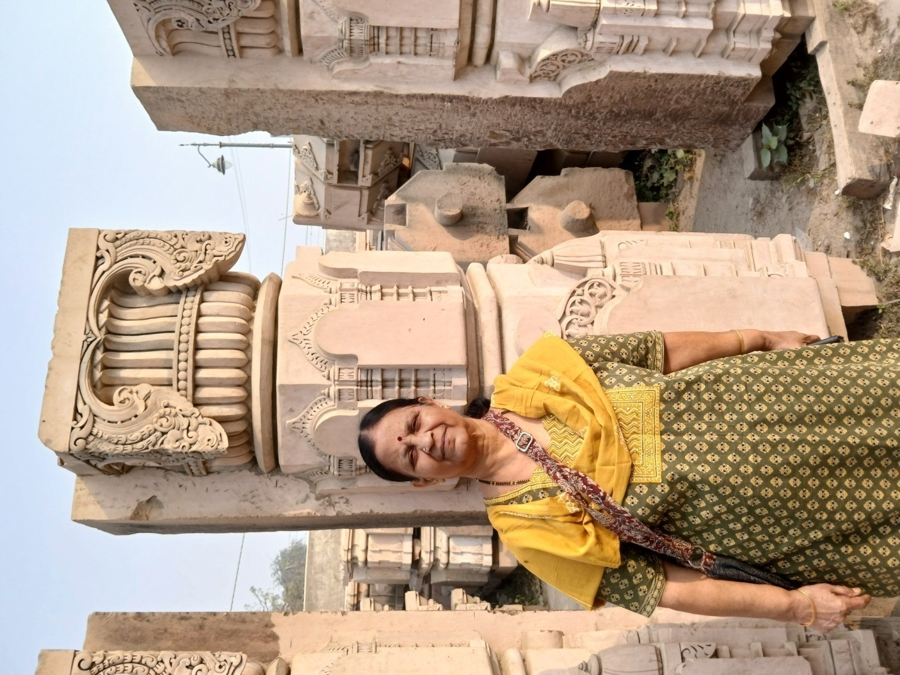
This is the place where all architectural works are carried out. Red stones are brought from Rajasthan and then here they are processed into pillars, statues, etc., and then taken to the temple site. Till now, the complete temple constructions are not over. To complete it may take a few years more.Then we went to Sita Rasoi Ghar. It is believed that Sita Devi, after her marriage, came to Ayodhya with Sri Ram to this place. In this place, donations are accepted and used for free meals. It is said that every day thousands of poor people who visit the Ram Mandir avail themselves of this facility.
Then we went to a small Ram temple where Ram, Sita, Lakshman, Bharat, and Hanuman deities were kept.
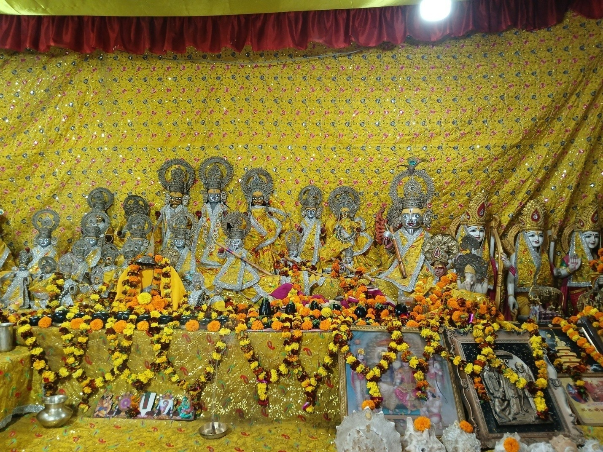
We were informed that all these deities were collected from the river Sarayu.Then we went to Sri Ram Janmabhoomi Mandir. Here, for senior citizens, a wheelchair facility is available. They charge Rs. 150. With a senior citizen, one person is also allowed. We opted for this to avoid standing in long queues. We did darshan within 30 minutes. People are not allowed to take mobiles, purses, bags, etc. Locker facilities are available to keep all these safely before darshan.
The construction of the main mandir is completed. In the main sanctum, the Ram deity is erected. The color is black. It looks pretty beautiful. Below the Ram deity, the old, smaller one is also kept. In 1992, L.K. Advani ji of the BJP started the Rath Yatra towards Ayodhya, and other parties like Shiv Sena also joined. On 6th December 1992, more than 2 lakh people joined in this yatra and assembled in front of the Babri Masjid, which was constructed during the 16th century. It is believed that earlier in this place, a Ram Mandir was there.
After the demolition, there was a riot between Hindus and Muslims in Ayodhya. Some 2,000 people were killed. Then the Godhra incident happened, and after that, in Gujarat, Muslims were killed. At last, the Supreme Court gave a judgment based on archaeological evidence that this place belongs to Hindus. After that, this temple was constructed.
Also, we visited Ayodhya Railway Station.
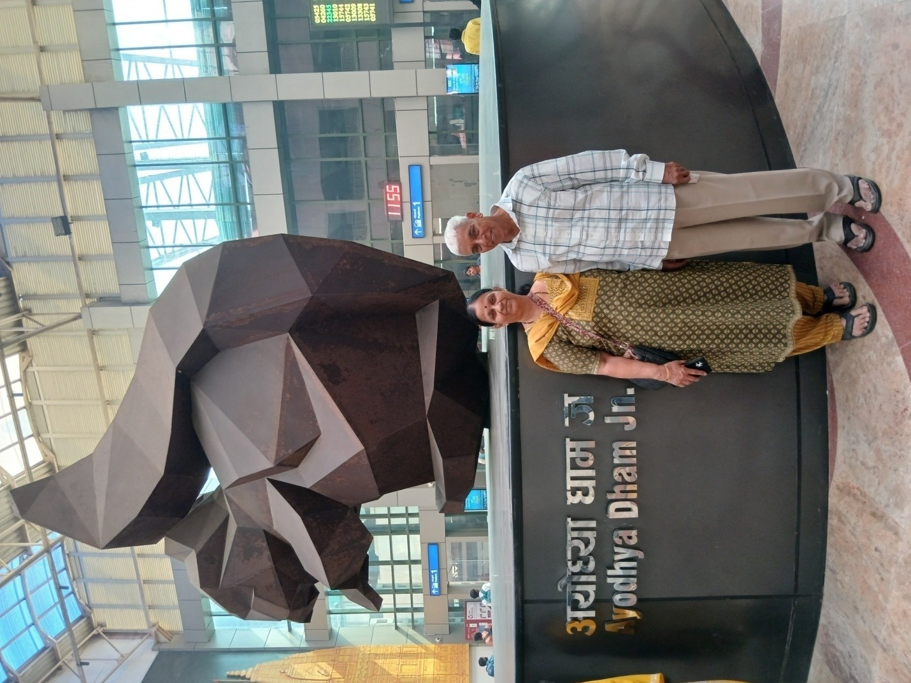
After that, we returned to the hotel and had our lunch. Around 2 pm, we proceeded to visit Hanuman Garhi. This is the very old temple of Ayodhya. To reach this temple, we had to climb around 50 steps. Also, it was very much crowded, and no proper queue system was followed. Somehow, with our tour manager, we visited the temple. Then we walked to Dasarath Mahal.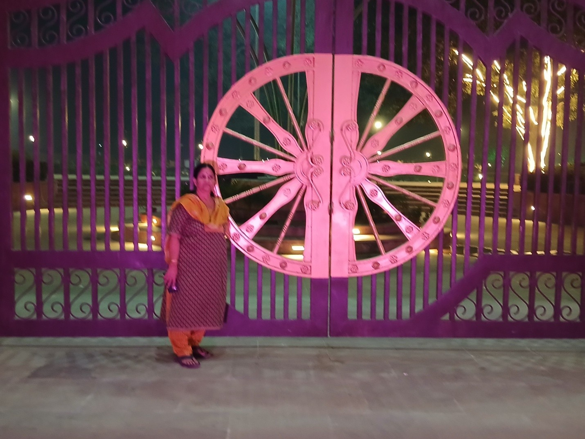
This is also another temple.Our last visiting spot was the Laser Show. But due to technical problems, the show was canceled, and we returned to the hotel around 8 pm and had our dinner.
We had our breakfast at 7:30 and left Ayodhya by 8:00 for Prayagraj. Prayagraj is the new name. Earlier, this city was called Allahabad. This city was developed during Akbar’s time, and Allahabad was the name given by Akbar. The distance between Ayodhya and Prayagraj is about 200 km, and travel time is about 3 hours 30 minutes.
The specialty of this city is that three rivers—Ganga, Yamuna, and Saraswati—join together here. This city is also called Triveni Sangam. For Hindus, this city is one of the most important spots, especially for conducting rituals for forefathers. We reached Prayagraj by 12:30. Before going to the hotel, we visited Annand Bhavan.
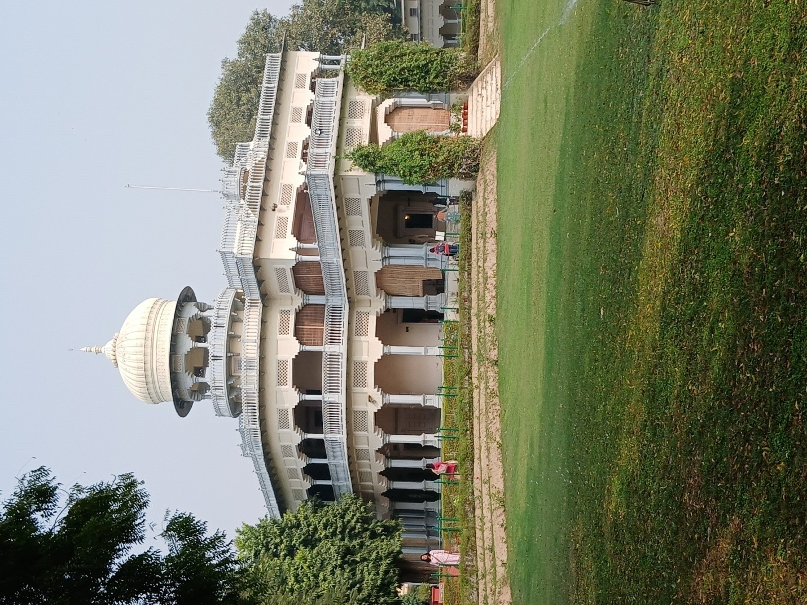
This mansion was purchased by Motilal Nehru when Jawaharlal Nehru was 10 years old. This was the meeting place of all Congress leaders before independence.After the demise of Jawaharlal Nehru, this bungalow was converted into a museum and kept for public view. The rooms of Jawaharlal Nehru and Indira Gandhi are kept as they were. The room where Mahatma Gandhi stayed whenever he came here is also maintained. All their rooms are true indications of how simple a life they lived.
After Anand Bhavan, we checked in at our booked hotel. The name is Placid. The room was spacious and clean. Lunch was in the same hotel. After lunch, we left for Thiruveni Sangamam.
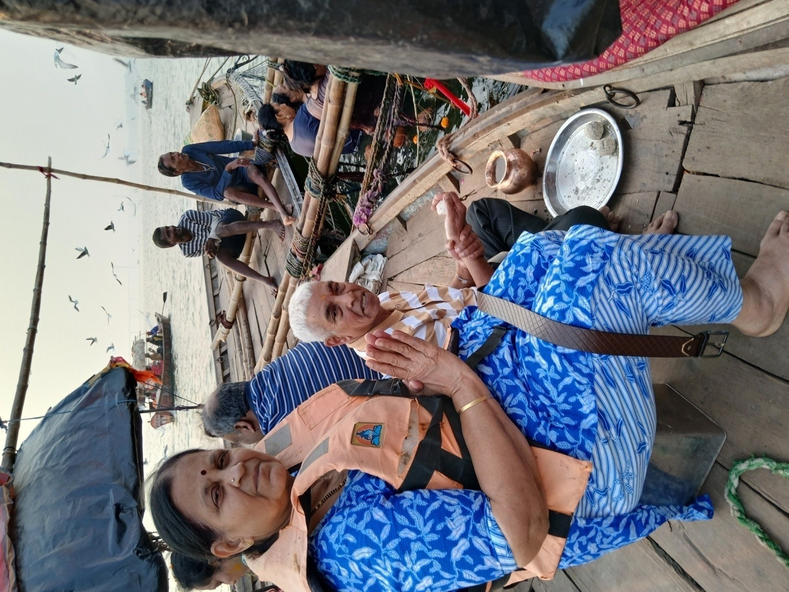
We reached close to the Yamuna riverbed by bus. Triveni Sangam is the spot where three rivers join. By boat, we reached that spot. Pandits are available all the time here to do rituals. We also did Pinda Daan. The ritual was about 15 minutes.After Triveni Sangam, we went to the Hanuman temple. A big crowd was there. Somehow, we managed to visit and came back safely. Here, Hanuman is in a lying posture. After this, we returned back to the hotel. In India, thousands of temples are there. It is unfortunate that only very few temples follow a perfect queue system. In most of the temples in Kerala and Karnataka, this system exists.
After breakfast, by 10 am, we proceeded to Varanasi. It is about 150 km from Prayagraj. Travel time is around 3 hours. Earlier, this city was called Kashi. Banaras is also another name of this city. Our accommodation was arranged at Hotel Silk City. After lunch, we took rest until 4 pm. After our tea at 4 pm, we went for shopping. This city is very congested and full of narrow lanes. Thousands of tourists visit this city every day. This city is very unclean.
We visited a saree shop called Vastra to purchase Banaras sarees and dress materials. The shop owner was showing a large number of sarees without showing any irksomeness. With us, another couple came, and they also purchased a few sarees. After the purchase, we returned to the hotel and had our dinner.
We got up very early in the morning at 3:30 am and got ready to visit temples. We left the hotel by 4:30 am. Since the road is narrow, we went in a Tempo instead of a bus. Veena World arranged two Tempos. First, we visited the Kaal Bhairav Temple. It is believed that this deity is protecting the entire city. Hence, whoever comes to Kashi, the custom is to pay respect to this deity. To reach this temple, we have to walk through a narrow lane from the main road. It is about 500 meters. Not even a rickshaw can go through this street. Aged people struggled to go through.
After this temple, we proceeded to visit Kashi Vishwanath Temple. To enter this temple, four gates are there. Gates are marked for general darshan and paid special darshan. Veena World bought tickets for special darshan. So, we didn't stand in the queue for a long time. Earlier, the areas surrounding this temple were very much congested. A few years back, all the shops and houses which were close to the temple were demolished, and now the temple premises are big and accommodate more visitors.
Also, the disputed mosque, Gyanvapi, is inside these premises. Inside this mosque, Vyas Sannidhi is there. We can see this only from the outside. Now that mosque is cordoned off. Goddess Annapurni, Nandi, and Badrinath and Radha Krishna deities are also within the premises of the Kashi temple. After paying respect to these deities, we came to the outer pragaram. From there, we can see the river Ganges.
Then we visited the Kashi Visalakshi Temple. This is also a small temple, and to visit it we have to walk through narrow lanes. After this temple, we returned to the hotel and had our breakfast. Around 2 pm, we proceeded to Brila Mandir.
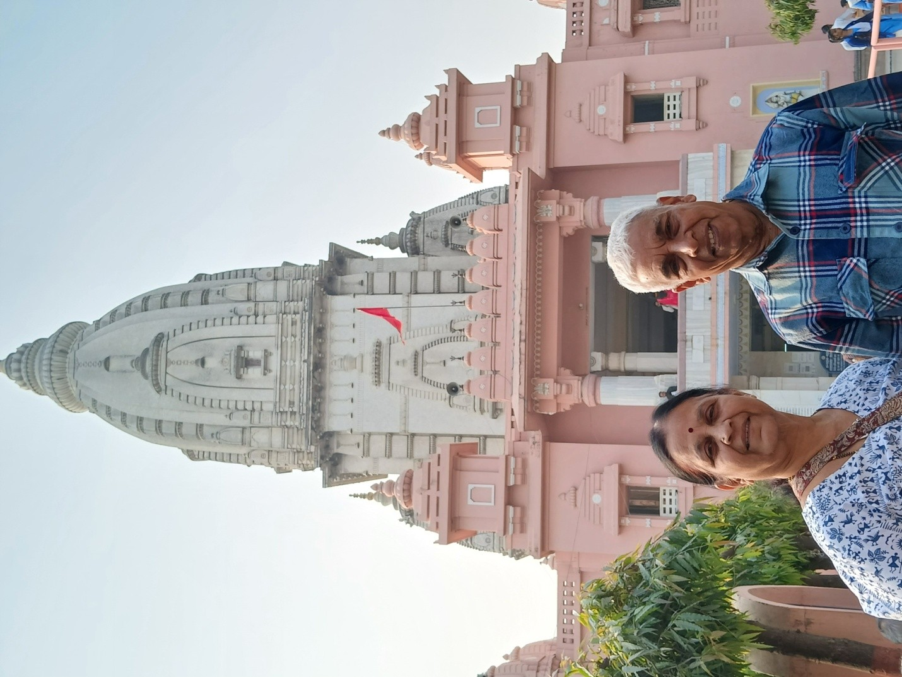
This mandir is inside the premises of Banaras Hindu University. Shiva is the main deity of this temple. Also, other deities—Hanuman, Nandi, and Panchamukha Mahadev—are there. This is a marble temple, very clean and well-maintained.In Varanasi, Pan, Lassi, Banaras Sarees, and Chaat are famous. We tasted Banaras Lassi in this place. Then we proceeded to the Ganga river bed.
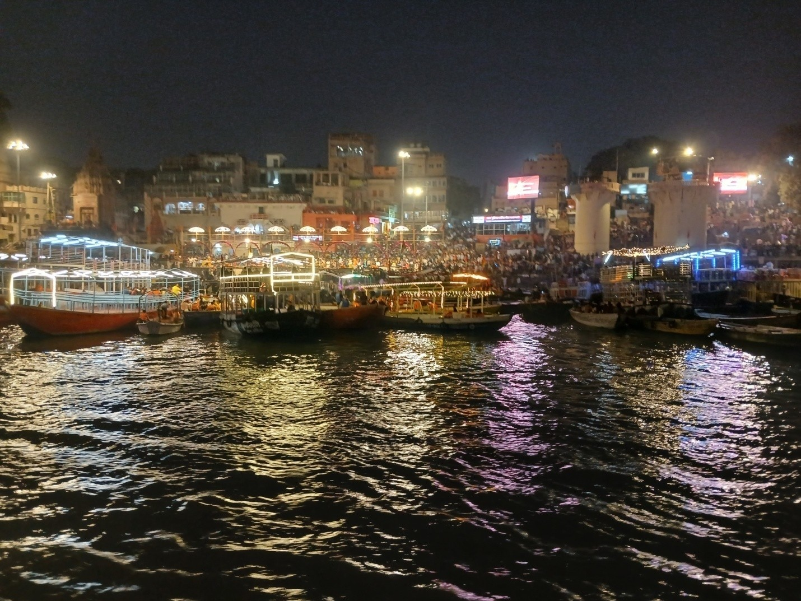
Veena World arranged boating on the Ganga river. It is an hour of boating, passing through many ghats. Actually, it is a double-decker ferry. From the upper deck, we enjoyed the beauty of the Ganga. The ferry was stopped to see the Ganga Aarti. From the deck, we could see the complete Aarti program. Then we were dropped where we actually boarded the ferry. By bus, we returned to the hotel.Today also we got up at 3:30 am and left the hotel at 4:30 am. We went to Assi Ghat to witness the Aarti. Assi river and Varuna are two rivers of Kasi.
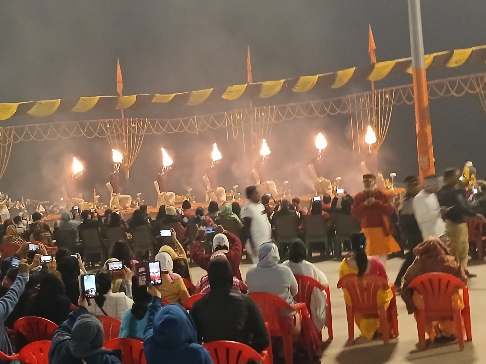
The name Varanasi is the combination of these two names. The Assi river joins the Ganga close to this spot. So this ghat is called Assi Ghat. After the Aarti, we saw local akhada training. Young boys were practicing. Then, around 7:30 am, we reached back to the hotel and had our breakfast.Until 11 am, we took rest and then proceeded for sightseeing. First, we visited a local saree-making place. Some purchased silk sarees there. Then we went for lunch. Veena World arranged a special Banaras lunch in a hotel called Shiva. They served it on a brass plate. Some 15 dishes, puri, and khichdi were all there. Food was excellent.
After lunch, we proceeded to Sanchi, most important sacred place for followers of the Buddhist religion.
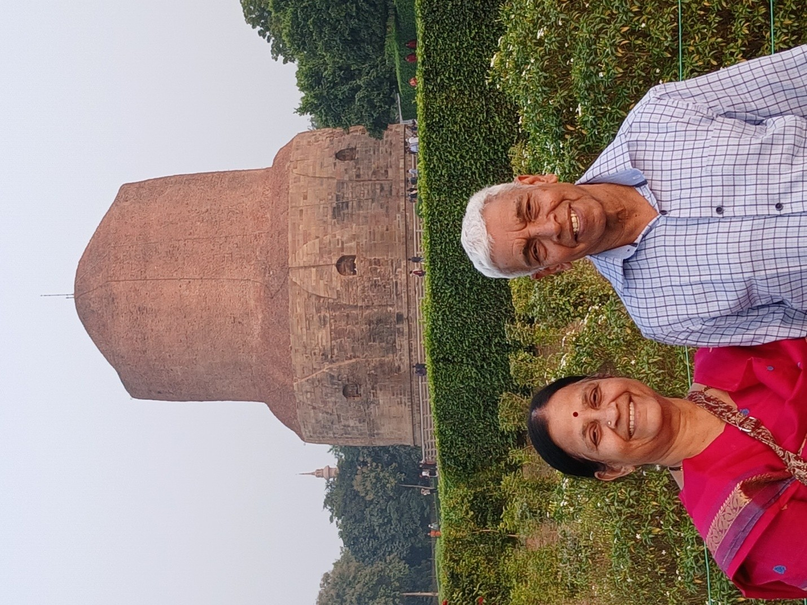
Here only, Lord Buddha gave his first sermon. It is a big garden with Buddha statues. We can also see Ashoka’s Stupa here. After this place, we returned back to the hotel after tasting the Banaras chaat at Shri Ram Bhandar.Today is the last day of this trip. Today also we got up early. As today is Amavasya, I decided to do Tharpanam on the Ganges riverbed. We took an auto-rickshaw and went to Godowlia Ghat. This is the nearest ghat from the hotel. We went there and had a bath. Did Tharpanam. Then took an auto-rickshaw and returned to the hotel.
At the hotel around 9 am, we had our breakfast. By 11 am, we checked out and proceeded to Varanasi Airport. This airport's name is Lal Bahadur Shastri International Airport. On the way, we visited the Archaeological Museum, Sarnath. Here, lots of sculptures belonging to the 4th and 5th centuries are kept. After the visit, we proceeded to the airport and reached around 2 pm. The flight was on time. We reached Mumbai Domestic Airport by 6:30 pm. After collecting our baggage, we took an auto and reached the Chembur MSRTC bus stop and got a bus to Pune. We reached home almost at midnight.
Reflections on the Uttar Pradesh Odyssey
This journey through the heart of Uttar Pradesh offered a profound look into India's rich history and deep spiritual roots. From the architectural grandeur of the Nawabs in Lucknow to the historic and newly restored majesty of Sri Ram Janmabhoomi in Ayodhya, the trip was a blend of past and present. Witnessing the sacred Triveni Sangam in Prayagraj and the eternal rituals on the ghats of Varanasi provided a soul-stirring experience. Despite the narrow lanes and bustling crowds, the devotion of the people and the ancient heritage of these cities left an indelible mark on our hearts. A truly memorable trip from the Gomti to the Ganga.